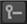

Before you do anything else, you need to tell CameraTracker which still frames you want it to track and how it should distribute the tracking features on each frame. Then, you can track your still frames.
| 1. | On the CameraTracker tab of the CameraTracker properties, ensure that Source is set to Stills. |
| 2. | Use the Range dropdown to determine which frames are analyzed: |
• Input - the default value, sets the frame range to the length of the sequence attached to the Source input.
• Global - sets the tracking frame range to the range set in the Project Settings frame range controls.
If no frame range is defined, the frame range of the first image you read in is used as the Global frame range.
• Custom - sets a tracking range of frames described by the from and to fields.
• Reference Frames - allows you to manually set keyframes on the frames you want to analyze.
| 3. | If you set Range to Reference Frames, do one of the following: |
• To set all frames in the input as reference frames, set the Add dropdown menu to Add All . Any missing frames on the input are skipped.
• To set a specific frame range as reference frames, set the Add dropdown menu to Add Range. In the dialog that opens, enter the frame range in the Frame range field and click OK.
• To set individual frames as reference frames, set the Thumbnails dropdown menu to All at the top of the Viewer. Then, scrub to a frame you want to set as a reference frame and click the add reference frame button  . The current frame is set as a keyframe and displayed in the thumbnail gallery at the bottom of the Viewer.
. The current frame is set as a keyframe and displayed in the thumbnail gallery at the bottom of the Viewer.
Scrub to the next frame you want to add as a reference frame and repeat the process until you're happy with your set of reference frames.
TIP: If necessary, you can also use the delete reference frame button  or the Delete dropdown menu in the CameraTracker properties to remove frames from the set of frames to analyze.
| 4. | Proceed to Adjusting the Features to Track below. |
| 1. | If you intend to mask out parts of your image (such as burn-ins), set the Mask control to the matte source. |
For example, if you're using the alpha channel from a Roto node attached to the Mask input, select Mask Alpha. For more information, see Masking Out Regions of the Image.
NOTE: For stereoscopic or multi-view footage, set the Principal View on the CameraTracker or Settings tab to the main tracking view. Any masking should be applied to this view, which is then used to calculate the secondary camera.
| 2. | On the Settings tab, define the starting points for feature tracking: |
• Number of Features - define the number of features you want to track in each frame.
Ideally, you should use more than 200 tracks per frame. In most cases, the default 250 should be sufficient, but in difficult solves you may consider using twice that number.
• Detection Threshold - set the distribution of features over the input image.
If you enter a low detection threshold value, features are tracked evenly on all parts of the image and vice versa.
|
|
|
| Low threshold distribution | High threshold distribution |
• Feature Separation - set the distribution of features in relation to each other.
To force feature separation and spread features evenly over the image at even distances, enter a high feature separation value.
|
|
|
| Low separation value | High separation value |
| 3. | Check Refine Feature Locations to lock detected features to local corners. If you activate this, CameraTracker finds the closest corner point in your footage and locks the feature to it. |
| 4. | Check Preview Features to view the current distribution of tracking features. |
Preview comes in handy when you want to tweak the tracking parameters further before tracking - it updates dynamically when controls are adjusted.
It's important to make sure that the previewed features are distributed evenly and not clustered together too densely before tracking using the distribution and separation controls.
|
|
| Previewing features in a sequence |
| 5. | Once you're happy with the feature distribution in the preview, proceed to Tracking the Selected Frames below. |
| 1. | In the CameraTracker properties, click Track to begin analyzing the still frames. |
CameraTracker begins by detecting viable features, aligning the reference frames, and then tracking forwards. Tracks that don't meet the quality thresholds set in the Settings tab Tracking controls are reseeded so that the number of tracks remains constant.
When the playhead reaches the end of the sequence, it begins a verifying pass by reading the frames sequentially backwards. Any tracks that were reseeded due to error are tracked back past the point where they were created, if they remain viable.
| 2. | Proceed to Viewing Reference Frames and Track Data. |
|
|